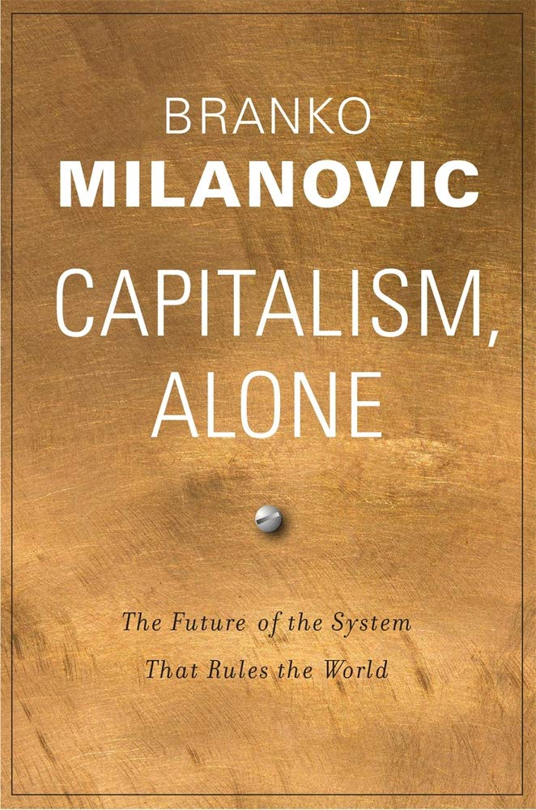

Branko Milanovic on taloustieteilijä, joka tunnetaan globaalia tuloeroja koskevasta työstään. Hänen teoksiaan ovat muun muassa “Global Inequality: A New Approach for the Age of Globalization”, joka oli vuonna 2016 ilmestynyt kansantajuinen teos globaalista epätasa-arvosta, ja uusin kirja “Visions of Inequality” ilmestyi äskettäin. Kirjoissaan Milanovic tutkii tulonjaon ja talousjärjestelmien dynamiikkaa globaalissa mittakaavassa.
Kirjan otsikko on itsessään kiinnostava, jopa hätkähdyttävä. Siinä on politiikan tutkija Francis Fukuyaman henkeä “historian lopusta”, liberaalidemokratian voittokulusta, ja samankaltaista ajatusta Milanovic tarjoaa nyt kapitaliselle järjestelmälle. Toisin kuin liberaalidemokratia, niin kapitalismi on järjestelmänä levittäytynyt maapallon jokaiseen kolkkaan, eikä sille ole enää varteenotettavaa kilpailijaa. MIlanovicin analyysi ei kuitenkaan ole suoraviivainen, vaan monin paikoin vivahteikas näkökulma maailmassa toimivaan kapitalistiseen järjestelmään.
Vaihtoehtoisten talousjärjestelmien puuttuessa, kilpailijat Milanovic löytää kapitalistisen järjestelmän sisältä, jotka hän jakaa länsimaiden edustamaan liberaaliin meritokraattiseen kapitalismiin sekä Kiinasta ja monesta muusta autokraattisista maista löytyvään poliittiseen kapitalismiin. Myös näillä järjestelmillä on historialliset juurensa. Nykyinen länsimainen meritokraattinen kapitalismi ei ole samanlaista kapitalismia kuin esimerkiksi Iso-Britannian klassinen kapitalismi sata vuotta sitten tai toisen maailman sodan jälkeen Länsi-Euroopassa ja Yhdysvalloissa noussut sosiaalidemokraattinen kapitalismi. Tämän päivän poliittinen kapitalismi syntyi taas Kiinassa Deng Xiaopingin aikana ratkaisuna kommunistisen talouden tehottomuuteen.
Milanovic pohtii kirjassa liberaalin meritokraattisen kapitalismin ja poliittisen kapitalismin tulevaisuutta, jota määrittelee maiden (ja molempien yhteiskuntajärjestelmien) sisällä kasvava eriarvoisuuskehitys. Tämä valtava eriarvoisuuden kehitys voi johtaa epävakauteen molempien yhteiskuntatyyppien maissa. Milanovic ei vain tyydy toteamaan haasteita, vaan pyrkii myös tarjoamaan ratkaisuja eriarvoisuuskehityksen lieventämiseksi.
Eräs kirjan mielenkiintoisinta antia on Milanovicin analyysi eriarvoisuuden kehityksestä länsimaissa. Hän esittää kuuden kohdan analyysin tulonjaon ja vaurauden keskittymisen syvävirtauksista (s. 23–42). Ensinnäkin (1) omistajien ja työntekijöiden välinen kuilu levenee, kun omistajien varallisuus kasvaa suhteessa työntekijöihin. Omistajat kasvattavat taloudellista ja poliittista vaikutusvaltaa investoimalla poliittisen kontrollin saamiseen ja sen säilyttämiseen. Toiseksi (2), varallisuus on erittäin keskittynyttä. Yhdysvalloissa rikkain 10 % omistaa lähes kaiken omistamisen arvoisen rahoitusvarallisuuden. Kolmanneksi (3), rikkaimmilla omaisuuden tuottoaste on korkeampi. Mitä rikkaampi henkilö on, sitä enemmän ja hajautetummin hänellä on erilaisia rahoitusinstrumentteja kuin muilla. Neljänneksi (4), homoploutia, eli korkean pääoma- ja työtulon yhteys samoilla henkilöillä. Toisin kuin 1800-luvun pääomatuotoillaan elävä luokka, niin nykyään suuria pääomatuloja saavat ovat taipuvaisia saamaan myös korkeita palkkatuloja. Yhdysvalloissa lähes 30 % niistä kotitalouksista, jotka pääomatulojen osalta kuuluvat ylimpään desiilin, saavat myös ansiotuloja, joilla päästään kaikista rikkaimpaan desiiliin. Määrä on kaksinkertaistunut vuodesta 1980. Viidenneksi (5), homogamia, valikoiva pariutuminen. Milanovicin mukaan yksi varallisuuseroja eniten määrittäviä tekijöitä on homogamia, eli puoliso valitaan yhä useammin samasta sosioekonomisesta viiteryhmästä. Kuudenneksi (6), varallisuuden hyödyt elintason, terveyden ja koulutuksen osalta siirtyvät sukupolvelta toiselle. Vanhempien ja lasten tulotasoissa on vahva korrelaatio.
Milanovic pitää nykyisen kaltaista järjestelmää mahdottomana ylläpitää, ellei eriarvoisuuskehitystä pysäytetä. Tämän vuoksi Milanovic pohtii kirjassa sosiaalipoliittisia ratkaisuja. Kansallisissa päätöksissä tulontasauksen osalta on yleisesti vannottu verotuksen nimeen, mutta Milanovicin mukaan sillä on vain rajallinen vaikutus—taloudellinen eriarvoisuus on kasvanut siitä huolimatta (s. 44–46). Milanovicin mukaan olisi puututtava eriarvoisuutta lisääviin juurisyihin, joka tarkoittaisi sitä, että keskiluokkaa kannustettaisiin sijoittamaan hajautetummin kuin vain asuntoihin, lisäämällä työntekijöiden mahdollisuuksia yrityksen osakeomistuksiin, ottamalla perintö- ja varallisuusverot käyttöön ja tasoittamalla koulutuksen laatua yhteiskunnassa (s. 47–50).
Milanovicin ajatus eriarvoisuuden kehityksestä liberaalissa meritokraattisessa kapitalismissa on vakuuttava. On vaikea suoranaisesti keksiä, mitä eriarvoisuuden kehitykselle voi tehdä, ettei yhteiskunta ajaudu rikkaiden valtaan. Ilmiselvästi verotus ei ole lopullinen vastaus. Sillä ei vaikuteta esimerkiksi homogamiaan. Suomessa on viime aikoina pyritty edistämään “kansankapitalismia” esimerkiksi luomalla osakesäästötilejä, jota on pohdittu jopa osaksi äitiyspakkausta. On kuitenkin epävarmaa, kuinka tämän kaltaiset toimet vähentävät eriarvoisuutta, kehitys voi olla jopa päinvastainen.
Poliittinen kapitalismi
Kirjan toinen osuus käsittelee poliittista kapitalismia, joka on Milanivicin mukaan kommunististen vallankumouksien historiallinen tuote. Useat tämän järjestelmän maista, kuten Kiina, Singapore, Vietnam ja Malesia, ovat hänen mukaansa onnistuneet luomaan erittäin tehokkaan teknokraattisen ja asiantuntevan byrokratian, joka on mahdollistanut maiden korkean talouskasvun. Järjestelmä kuitenkin nojaa harvainvaltaan, heikkoon oikeusvaltioon ja systeemiseen korruptioon (s. 91–96).
Poliittisen kapitalismin sisällä myös kasvaa taloudellinen eriarvoisuus, ja kirjassa Milanovic tarkastelee tapauskohtaisesti Kiinaa. Hän analysoi monipuolisesti eriarvoisuustutkimuksia, joita on tehty Kiinan osalta esittäen niistä luotettavimmat metodologiset lähestymistavat. Kiinassa taloudellisen eriarvoisuuden kasvun taustalla on valtavan nopea talouskasvu. Taloudellinen eriarvoisuus on kasvanut räjähdysmäisesti, jopa 20 gini-pistettä noin 30 vuodessa. Samaan aikaan Yhdysvalloissa eriarvoisuus kasvoi neljä gini-pistettä (s. 98-103).
Milanovic pohtii myös poliittisen kapitalismin houkuttelevuutta, niin Kiinan sisällä kuin vientituotteena. Vaikka kapitalistinen luokka on saanut jalansijaa Kiinassa, on tietenkin arvailujen varassa, kuinka suuri vaikutusvalta sillä on valtion tasolla. Milanovicin mukaan Kiinan hallinto on avulias porvaristojen etujen suojelemiseen, vain jos ne eivät ole vastakkaisia hallinnon pyrkimyksille (s. 116). Länsimaisen omistusoikeuden näkökulmasta Kiinassa sääntöjä sovelletaan mielivaltaisesti, omistusjärjestelyt ovat epäselviä, eivätkä lait ole tasapuolisia kaikille, mutta Milanovicin mukaan se on juuri se ympäristö, jossa poliittinen kapitalismi elää ja voi kukoistaa. Tässä voidaan kuitenkin havaita poliittisen kapitalismin institutionaalisen noidankehän, jossa pienet eliittiryhmittymät suojelevat etujaan ja hyötyvät kansalaisten kustannuksella. Milanovicin pitää mahdollisena, ettei kasvava kapitalistinen luokka lopulta tyydy tällaiseen, vaan alkaa vaatimaan demokraattisia muutoksia. Todennäköisempänä hän kuitenkin pitää skenaariota, että valtion ja liike-elämän epäsymmetrinen liitto jatkuu, kuten se on jatkunut vuosituhansien ajan.
Milanovicin mukaan poliittisen kapitalismin hyödyt suoraviivaisena päätöksentekoprosessina, jossa voidaan unohtaa joidenkin ihmisten oikeudet, voivat olla houkutteleva vaihtoehto myös niiden kansalaisten mielestä, ellei se loukkaa heidän etujaan. Milanovicin mukaan kansalaisten todellinen halu osallistua päätöksentekoprosesseihin on myös kyseenalaista. Hän epäilee, ettei Kiinan valtavat infrastruktuuriprojektit olisi onnistuneet yhtä nopeasti demokraattisissa maissa, koska kansalaisten mielipiteen kuulemiseen olisi kulunut aikaa. Milanovicin mielestä on mahdollista myös, että yhteiskunnan sisäinen korruptiota siedetään, koska se helpottaa myös monien kansalaisten elämää, jotka ovat tottuneet siihen, että keskinäisiä palveluksia vaihdetaan. Kiinan puolivuosisataa kestänyt nopea talouskasvu, kyky eristää politiikka taloudesta, hallitsijoiden autonomia ja toteuttaa yhteiskunnallisia tuloksia erilaisin projektein, voi Milanovicin mielestä houkutella Kiinaa viemään omaa yhteiskuntajärjestelmää muihin maihin tai tulla jopa muiden maiden jäljittelemäksi (s. 118–125).
Milanovicin ajatusta poliittisesta kapitalismista voi pitää sangen stereotyyppisenä. Tehokkuus ei saisi olla ainoa arviointikriteeri päätöksentekojärjestelmälle, vaan myös demokratian periaatteita, oikeusvaltioperiaatetta ja ihmisoikeuksien kunnioittamista tulisi pitää keskeisinä. Kiinan sisäisen korruption sietäminen ei välttämättä ole merkki siitä, että kansalaiset hyväksyvät sen, vaan pikemminkin se voi johtua puutteellisista mahdollisuuksista ilmaista vastustustaan ilman pelkoa seuraamuksista. Kiinan talouskasvu johtuu pitkälti valtavasta takamatkasta verrattuna vanhoihin teollisuusmaihin, ja siirtyminen kapitalistiseen järjestelmään ja osallistuminen maailmankauppaan on sitä hyödyttänyt. On kuitenkin hyvin epävarmaa, kuinka pitkään Kiinan ekstraktiiviset instituutiot (Acemoglu & Robinson 2012) tuottavat kasvua ja hyvinvointia. Jo nyt on näkyvissä hidastuvaa talouskasvua, joka voi tuottaa Kiinalle yhteiskunnallisia levottomuuksia.
Kapitalismi ja globalisaatio
Kirjan kaksi viimeistä lukua Milanovic omistaa kapitalismin ja globalisaation vuorovaikutukselle ja järjestelmän tulevaisuudelle. Lukujen mielenkiintoisinta antia on Milanovicin pohdinta muuttoliikkeestä. Taloustieteessä on vakaa konsensus, että köyhyys johtuu pitkälti siitä, että ihmiset sattuvat syntymään köyhään maahan. Ihmiset ovat eriarvoisessa asemassa kansalaisuuden perusteella, joten työperäisen maahanmuuton esteiden poistaminen lisää tuottavuutta ja hyvinvointia. Tämän Milanovic myöntää, mutta hänen mukaansa on myös tunnustettava, että muuttoliike häiritsee tavalla tai toisella isoa osaa alkuperäisväestöä. Milanovicin mukaan “kansalaisuuspalkkio”, joka rikkaissa maissa toteutuu erilaisin hyvinvointijärjestelmin, tulonsiirroin ja vakaiden instituutioiden muodossa, pienenee maahan saapuvan muuttoliikkeen seurauksena. Tämän vuoksi maiden olisi hyväksyttävä se, ettei tilapäisillä maahanmuuttajilla olisi samanlaista pääsyä hyvinvointijärjestelmiin kuin alkuperäisväestöllä (s. 131–147). Onko se pragmaattista, vaiko sittenkin ristiriitaista ajattelua, että eriarvoisuustutkija ehdottaa eriarvoisten käytäntöjen toimeenpanoa? Monelle maalle, kuten Suomelle, “kansalaisuuspalkkio” voisi olla houkutteleva “tuote”, jopa elinehto, jotta maahan saataisiin ulkomaista työvoimaa. Suomessa maahanmuutto voi auttaa ratkaisemaan väestön ikääntymiseen ja väestörakenteen muutoksiin liittyviä haasteita. On toki välttämätöntä toteuttaa politiikkatoimia, jotka hallitusti integroivat maahanmuuttajat yhteiskuntaan ja työmarkkinoille ilman, että tämä heikentää alkuperäisväestön hyvinvointia.
Milanovicin kapitalismin tulevaisuudesta on sangen pessimistinen, vaikka näkee järjestelmässä positiivisia puolia hyvinvoinnin ja tehokkuuden tuottamisen saralla. Hierarkian määrittyminen varallisuuden perusteella johtaa siihen, että ihmiset keskittyvät hankkimaan varallisuutta (s. 177). Jatkamalla nykyistä kehitystä, se tulee johtamaan eriarvoisuuden kasvuun, moraalin heikkenemiseen ja rikkaiden valta-asemaan molemmissa järjestelmissä, jotka voivat säätää politiikkatoimia omiksi edukseen (s. 196–197). Milanovicin mukaan kapitalismi on yhä atomisoituneempi ja ottanut yhä enemmän ottanut valta-asemaa ihmisten yksityisestä tilasta. Tämä on mielenkiintoinen näkökulma, joka varmasti jossain määrin pitää paikkansa. Itselleni tuli mieleen esimerkiksi Airbnb’n kaltaiset yritykset ovat mahdollistaneet kotien/huoneiden vuokraamisen, joita aikaisemmin on pidetty hyvin yksityisenä ja henkilökohtaisena tilana. Vaikka eriarvoisuuden kasvu näyttää uhkaavalta, niin mahdollisuuksiakin on Milanovicin mukaan muitakin, jos tarvittavia politiikkatoimia tehdään (s. 215–218).
Kokonaisuudessaan Milanovicin kirja oli erinomainen katsaus maailmassa vaikuttavaan kapitalistiseen järjestelmään ja sen sisällä kilpaileviin muotoihin: liberaaliin meritokraattiseen kapitalismiin ja poliittiseen kapitalismiin. Se antaa lukijalle pohdittavaa, mitä eriarvoisuuden kehitykselle lopulta voi tehdä. Milanovicilla on melko radikaalejakin ajatuksia politiikkatoimista, jotka ainakin itselleni tuntuvat ristiriitaiselta. Epäselvää on, kuinka ne lopulta vähentäisivät eriarvoisuutta. Kirja on kuitenkin mielestäni jopa pakollista luettavaa taloudellisesta eriarvoisuudesta kiinnostuneelle opiskelijalle tai tutkijalle.
Branko Milanovic (2019). Capitalism, Alone. The Future of the system that rules the world. London: Harvard University Press.